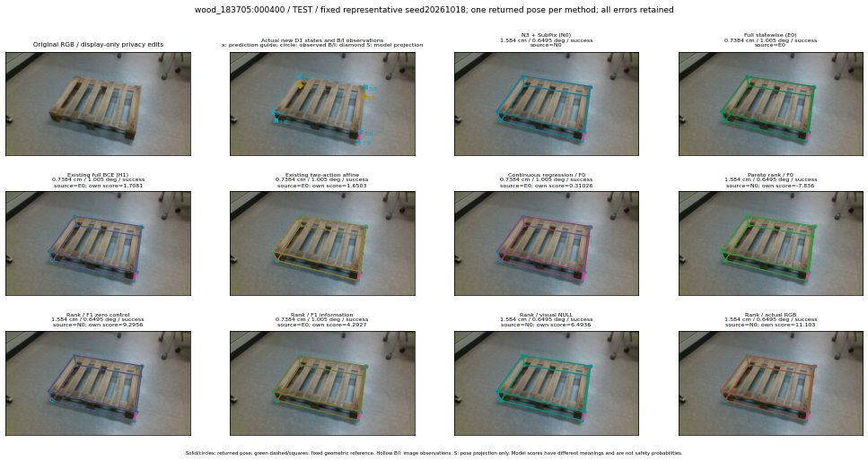

실선은 반환 자세, 초록 점선은 고정 기하 참조입니다. S는 영상 관측이 아닙니다. 점수는 모델별 의미가 다르며 보정된 안전 확률이 아닙니다. 개인정보 처리는 표시 사본에만 적용했습니다.
| 방법·seed | 위치 / 회전 / 공동성공 | 실제 출처 | 선택 후보 | 각 모델 자체 점수 |
|---|---|---|---|---|
| N0 | 1.584 cm / 0.6495 deg / success | N0 | N/A | N/A |
| E0 | 0.7384 cm / 1.005 deg / success | E0 | N/A | N/A |
| E0_REGENERATED | 0.7384 cm / 1.005 deg / success | E0 | E0_REGENERATED | N/A |
| POSEFIX_SUBPIX_PF_ANCHOR | 0.9534 cm / 0.1034 deg / success | OTHER | N/A | N/A |
| POSEFIX_SUBPIX_YOLO_ANCHOR | 0.9534 cm / 0.1034 deg / success | OTHER | N/A | N/A |
| D1_H1_MLP_s20261018 | 0.7384 cm / 1.005 deg / success | E0 | E0_REGENERATED | 1.7081364393234253 |
| D1_H1_MLP_s20261019 | 0.7384 cm / 1.005 deg / success | E0 | E0_REGENERATED | 1.2459392547607422 |
| D1_H1_MLP_s20261020 | 0.7384 cm / 1.005 deg / success | E0 | E0_REGENERATED | 2.2685012817382812 |
| D1_H1_PAIR_MLP_s20261018 | 0.7384 cm / 1.005 deg / success | E0 | E0_REGENERATED | 0.5315494537353516 |
| D1_H1_PAIR_MLP_s20261019 | 0.7384 cm / 1.005 deg / success | E0 | E0_REGENERATED | 1.445489764213562 |
| D1_H1_PAIR_MLP_s20261020 | 0.7384 cm / 1.005 deg / success | E0 | E0_REGENERATED | 1.6110098361968994 |
| D1_H1_PAIR_ROLE_AFFINE_s20261018 | 0.7384 cm / 1.005 deg / success | E0 | E0_REGENERATED | 1.6503130197525024 |
| D1_H1_PAIR_ROLE_AFFINE_s20261019 | 0.7384 cm / 1.005 deg / success | E0 | E0_REGENERATED | 1.8682904243469238 |
| D1_H1_PAIR_ROLE_AFFINE_s20261020 | 0.7384 cm / 1.005 deg / success | E0 | E0_REGENERATED | 1.435475468635559 |
| R_CONT_F0_s20261018 | 0.7384 cm / 1.005 deg / success | E0 | E0_REGENERATED | 0.3102604150772095 |
| R_CONT_F0_s20261019 | 0.7384 cm / 1.005 deg / success | E0 | E0_REGENERATED | 0.3372294306755066 |
| R_CONT_F0_s20261020 | 0.7384 cm / 1.005 deg / success | E0 | E0_REGENERATED | 0.38821518421173096 |
| R_ORDER_F0_s20261018 | 1.584 cm / 0.6495 deg / success | N0 | N0 | -7.83598518371582 |
| R_ORDER_F0_s20261019 | 1.584 cm / 0.6495 deg / success | N0 | N0 | -4.939655303955078 |
| R_ORDER_F0_s20261020 | 0.7384 cm / 1.005 deg / success | E0 | E0_REGENERATED | 5.727125644683838 |
| R_ORDER_F1_ZERO_s20261018 | 1.584 cm / 0.6495 deg / success | N0 | N0 | 9.295567512512207 |
| R_ORDER_F1_ZERO_s20261019 | 0.7384 cm / 1.005 deg / success | E0 | E0_REGENERATED | 6.780355453491211 |
| R_ORDER_F1_ZERO_s20261020 | 0.7384 cm / 1.005 deg / success | E0 | E0_REGENERATED | 6.925769805908203 |
| R_ORDER_F1_s20261018 | 0.7384 cm / 1.005 deg / success | E0 | E0_REGENERATED | 4.292684555053711 |
| R_ORDER_F1_s20261019 | 0.9494 cm / 1.414 deg / success | OTHER | WD0/ORIGINAL_WD/selected | 8.347297668457031 |
| R_ORDER_F1_s20261020 | 0.7384 cm / 1.005 deg / success | E0 | E0_REGENERATED | -2.2676103115081787 |
| V_ORDER_NULL_s20261018 | 1.584 cm / 0.6495 deg / success | N0 | N0 | 6.493636131286621 |
| V_ORDER_NULL_s20261019 | 0.9494 cm / 1.414 deg / success | OTHER | WD0/ORIGINAL_WD/selected | 4.034356117248535 |
| V_ORDER_NULL_s20261020 | 0.7384 cm / 1.005 deg / success | E0 | E0_REGENERATED | -3.086777448654175 |
| V_ORDER_RGB_s20261018 | 1.584 cm / 0.6495 deg / success | N0 | N0 | 11.103301048278809 |
| V_ORDER_RGB_s20261019 | 0.9494 cm / 1.414 deg / success | OTHER | WD0/ORIGINAL_WD/selected | 4.649181842803955 |
| V_ORDER_RGB_s20261020 | 1.584 cm / 0.6495 deg / success | N0 | N0 | -10.616403579711914 |